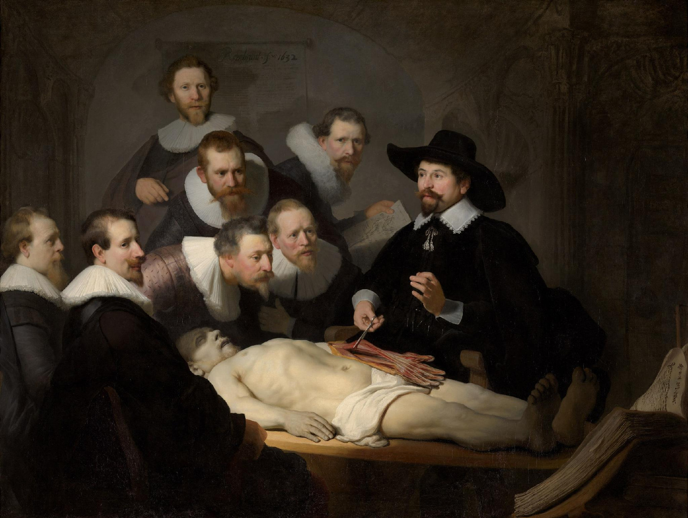

CHAPTER 4 · 산업보건학의 과제
알고리즘 위험성평가 (Algorithmic Risk Assessment)

렘브란트, 〈튈프 박사의 해부학 강의〉 (1632) — 이제 해부대 위에 알고리즘을 올려야 한다
1
사전 영향 평가
도입 전, 작업 밀도·휴식·스트레스 영향을 노사 합동 평가
2
파라미터 위험도 검증
시간 제한·수락률 불이익의 과속·과로 유발 정량 검증
3
지속 모니터링 · 노동자 참여
위험 유발 로직의 실시간 수정
4
제3자 독립 감사
외부 산업보건 전문기관의 정기 알고리즘 감사
EU AI Act — 노동·HR 분야 AI는 이미 ‘고위험(High-Risk)’으로 분류된다
테세우스는 프로크루스테스를 붙잡아 그의 침대에 눕혔다노동자를 재단해 온 기준을, 이번에는 우리가 평가대 위에 올려 재는 것 — 우리가 테세우스가 되는 것이다